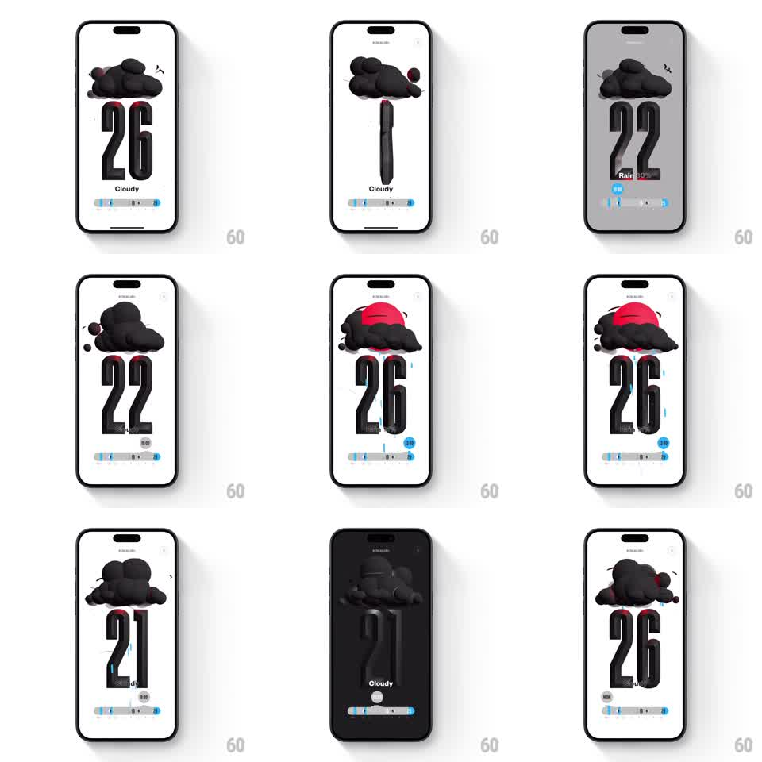

Media
Frame-by-frame

Rebuild this interaction 1:1: (Not Boring) Weather's city screen - dragging the bottom slider scrubs the hourly forecast: giant 3D temperature numerals roll vertically while the sky illustration morphs above them.

Rebuild this interaction 1:1: (Not Boring) Weather's city screen - dragging the bottom slider scrubs the hourly forecast: giant 3D temperature numerals roll vertically while the sky illustration morphs above them. ## Integration Integration: stack-agnostic spec - springs given as stiffness/damping, timed motions as duration + curve; map every value to your framework and animation library of choice. ## Scene White screen, city name small at top (Bengaluru). Dominating the screen: enormous black 3D-look condensed numerals (26) with a condition label beneath (Cloudy). Above the numerals, a morphing illustration - black cloud cluster, sun behind cloud, rain drops. At the bottom: a horizontal slider showing the hourly temperature gradient (blue-to-gray track). ## Motion spec Pattern: scrub-driven numeral roll + illustration morph. - Drag the slider: the thumb tracks 1:1; the hour readout ticks through the forecast as the thumb passes each stop. - Temperature numerals roll like a split-flap/3D drum: each digit rotates around its horizontal axis, the old value flipping down and away as the new flips in from above (per-digit 250ms, 40ms stagger between digits), with motion blur at speed. - The sky illustration morphs between states (cloud, sun-cloud, rain) as the scrub crosses condition boundaries: elements scale/dissolve into each other over 300ms, rain drops falling with a slight loop while active. - Scrubbing fast blends multiple steps - digits keep flipping without queueing. - Release: the slider settles to the nearest hour with a soft spring (~380/26); numerals finish their roll. ## Calibration - The numerals are the screen - everything else orients around their roll; they never jump, only flip. - The slider gradient maps real hourly temps to color; thumb position and displayed hour never desync. ## Reduced motion Numerals crossfade; illustration swaps without morph. ## Don't miss - The digits have a subtle 3D extrusion/shadow - flat numbers lose the tactile drum feel. - The illustration stays black/silhouette with at most one accent (sun red) - this is a print-like world.